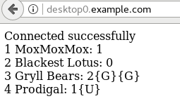

yum -y install httpd httpd-manualHTTPD
Table of Contents
基本配置
安装
配置
# vim /etc/httpd/conf/httpd.conf
# grep ServerAdmin /etc/httpd/conf/httpd.conf
ServerAdmin webmaster@example.com创建默认网页
# echo 'Hello Class!' >> /var/www/html/index.html
# cat /var/www/html/index.html
Hello Class!启动服务
# systemctl start httpd.service
# systemctl enable httpd.service配置防火墙
# firewall-cmd --permanent --add-service=http
# firewall-cmd --reload通过如下链接测试:
配置 VirtualHost
准备 DocumentRoot 目录及欢迎页面
# mkdir -p /srv/{default,lab.example.com}/www
# echo 'Hello World' >> /srv/default/www/index.html
# echo 'This is from lab.example.com' >> /srv/lab.example.com/www/index.html
# restorecon -Rv /srv/创建 VirtualHost
# cat << EOF > /etc/httpd/conf.d/00-default-vhost.conf
<VirtualHost _default_:80>
DocumentRoot /srv/default/www
CustomLog "logs/default-vhost.log" combined
</VirtualHost>
<Directory /srv/default/www>
Require all granted
</Directory>
EOF创建 VirtualHost
# cat << EOF > /etc/httpd/conf.d/01-lab.example.com-vhost.conf
<VirtualHost *:80>
ServerName lab.example.com
ServerAlias www
DocumentRoot /srv/lab.example.com/www
CustomLog "logs/lab.example.com.log" combined
</VirtualHost>
<Directory /srv/lab.example.com/www>
Require all granted
</Directory>
EOF启动 httpd
# systemctl start httpd.service
# systemctl enable httpd.service配置防火墙
# firewall-cmd --permanent --add-service=http
# firewall-cmd --reloa测试
# hostname
test.example.com
# curl http://test.example.com
Hello World
# curl http://localhost
Hello World
# curl http://lab.example.com
This is from lab.example.com配置 HTTPS
安装包
# yum -y install httpd mod_ssl
# yum install -y crypto-utils生成 TLS 证书
# genkey test.example.com创建测试目录及文件
# mkdir -p /srv/test.example.com/www
# echo 'test.example.com' >> /srv/test.example.com/www/index.html
# restorecon -Rv /srv/查看证书文件路径
# ls -l /etc/pki/tls/certs/test.example.com.crt
-rw-r-----. 1 root root 1221 Apr 16 21:36 /etc/pki/tls/certs/test.example.com.crt
# chmod 0600 /etc/pki/tls/private/test.example.com.key
# ls -l /etc/pki/tls/private/test.example.com.key
-rw-------. 1 root root 1737 Apr 16 21:36 /etc/pki/tls/private/test.example.com.key配置 SSL
# cat << EOF > /etc/httpd/conf.d/test.conf
<VirtualHost *:443>
ServerName test.example.com
SSLEngine On
SSLProtocol all -SSLv2 -SSLv3
SSLCipherSuite HIGH:MEDIUM:!aNull:!MD5
SSLHonorCipherOrder on
SSLCertificateFile /etc/pki/tls/certs/test.example.com.crt
SSLCertificateKeyFile /etc/pki/tls/private/test.example.com.key
DocumentRoot /srv/test.example.com/www
</VirtualHost>
<Directory /srv/wwwX/www>
Require all granted
</Directory>
<VirtualHost *:80>
ServerName test.example.com
RewriteEngine on
RewriteRule ^(/.*)$ https://%{HTTP_HOST}$1 [redirect=301]
</VirtualHost>
EOF启动 httpd
# systemctl start httpd.service
# systemctl enable httpd.service配置防火墙
# firewall-cmd --permanent --add-service=http --add-service=https
# firewall-cmd --reload场景练习
配置支持 TLS 的虚拟主机
本部分配置 TLS 加密的虚拟主机。
1 - 安装 httpd 和 mod_ssl 软件包
# yum install httpd mod_ssl -y2 - 创建内容目录，同时标识内容和相应的 SELinux 上下文
# mkdir -p /srv/{www,webapp}0/www
# vim /srv/www0/www/index.html
# vim /srv/webapp0/www/index.html
# restorecon -Rv /srv/3 - 将所有需要的证书和私钥下载到具有正确权限的正确位置
# cd /etc/pki/tls/certs
# wget http://classroom.example.com/pub/example-ca.crt
# wget http://classroom.example.com/pub/tls/certs/www0.crt
# wget http://classroom.example.com/pub/tls/certs/webapp0.crt
# cd /etc/pki/tls/private
# wget http://classroom.example.com/pub/tls/private/www0.key
# wget http://classroom.example.com/pub/tls/private/webapp0.key
# chmod 0600 w*0.key && ls -l w*0.key
-rw-------. 1 root root 912 Jul 22 2017 webapp0.key
-rw-------. 1 root root 912 Jul 22 2017 www0.key4 - 创建虚拟主机 www0，创建 /etc/httpd/conf.d/www0.conf，添加如下内容
<VirtualHost *:443>
ServerName www0.example.com
SSLEngine On
SSLProtocol all -SSLv2 -SSLv3
SSLCipherSuite HIGH:MEDIUM:!aNull:!MD5
SSLHonorCipherOrder on
SSLCertificateFile /etc/pki/tls/certs/www0.crt
SSLCertificateKeyFile /etc/pki/tls/private/www0.key
SSLCertificateChainFile /etc/pki/tls/certs/example-ca.crt
DocumentRoot /srv/wwwX/www
</VirtualHost>
<Directory /srv/www0/www>
Require all granted
</Directory>
<VirtualHost *:80>
ServerName www0.example.com
RewriteEngine on
RewriteRule ^(/.*)$ https://%{HTTP_HOST}$1 [redirect=301]
</VirtualHost>5 - 创建虚拟主机 webapp0，复制 www0 配置，然后将 www 替换为 webapp
# cp /etc/httpd/conf.d/{www,webapp}0.conf
# sed -i 's/www0/webapp0/g' /etc/httpd/conf.d/webapp0.conf6 - 启动并启用 httpd.service，然后打开相关的防火墙端口
# systemctl start httpd && systemctl enable httpd
# firewall-cmd --permanent --add-service=http --add-service=https
# firewall-cmd --reload创建 php 动态应用
1 - 安装包
# yum install httpd mariadb-server php php-mysql -y2 - 启动服务
# systemctl start httpd.service mariadb.service
# systemctl enable httpd.service mariadb.service3 - 配置防火墙
# firewall-cmd --permanent --add-service=http
# firewall-cmd --reload4 - Mysql 配置
CREATE DATABASE IF NOT EXISTS mtg;
CREATE USER 'test_user'@'localhost' IDENTIFIED BY 'test_pass';
GRANT ALL PRIVILEGES ON mtg.* TO 'test_user'@'localhost';
USE mtg;
CREATE TABLE Cards (
CardID INT NOT NULL AUTO_INCREMENT,
NAME VARCHAR(255) NOT NULL,
Cost VARCHAR(255) NOT NULL,
PRIMARY KEY (CardID)
);
INSERT INTO Cards VALUES(NULL, 'MoxMoxMox', '1');
INSERT INTO Cards VALUES(NULL, 'Blackest Lotus', '0');
INSERT INTO Cards VALUES(NULL, 'Gryll Bears', '2{G}{G}');
INSERT INTO Cards VALUES(NULL, 'Prodigal', '1{U}');6 - 验证 Mysql 数据查询
# mysql -uroot mtg -e "SELECT * FROM Cards"
+--------+----------------+---------+
| CardID | NAME | Cost |
+--------+----------------+---------+
| 1 | MoxMoxMox | 1 |
| 2 | Blackest Lotus | 0 |
| 3 | Gryll Bears | 2{G}{G} |
| 4 | Prodigal | 1{U} |
+--------+----------------+---------+7 - 创建 /var/www/html/index.php
<html>
<head>
</head>
<body>
<?php
$servername = 'localhost';
$username = 'test_user';
$password = 'test_pass';
$dbname = 'mtg';
$conn = mysqli_connect($servername, $username, $password, $dbname);
if (!$conn) {
die("Connection failed: " . mysqli_connect_error());
}
echo '<div>Connected successfully</div>';
$contents = mysqli_query($conn, 'SELECT * FROM Cards');
while ($row = mysqli_fetch_array($contents)){
echo $row['CardID'] . ' ' . $row['NAME'] . ': ' . $row['Cost'] . '<br />';
}
?>
</body>
</html>使用 http://desktop0.example.com 访问，查看页面显示的数据

提供 Apache HTTPD Web 服务
本部分将通过 HTTPS 来提供 Python WSGI Web 应用程序。
1 - 安装支持 httpd、TLS 和 WSGI 所需要的软件包
# yum install httpd mod_ssl mod_wsgi -y2 - 在 server0 上的文件系统中创建一个适当位置以托管 Web 应用程序，然后将应用程序复制到其中
# mkdir -p /srv/webapp0/www
# cp /home/student/webapp.wsgi /srv/webapp0/www/
# restorecon -Rv /srv/webapp0/3 - 下载您配置 TLS 所需要的所有证书和密钥
# cd /etc/pki/tls/certs && wget http://classroom.example.com/pub/example-ca.crt
# cd /etc/pki/tls/certs && wget http://classroom.example.com/pub/tls/certs/webapp0.crt
# cd /etc/pki/tls/private && wget http://classroom.example.com/pub/tls/private/webapp0.key && chmod 0600 webapp0.key && ls -l webapp0.key4 - 创建包含以下内容的新文件 /etc/httpd/conf.d/webapp0.conf
<VirtualHost *:443>
ServerName webapp0.example.com
SSLEngine on
SSLProtocol all -SSLv2 -SSLv3
SSLCipherSuite HIGH:MEDIUM:!aNULL:!MD5
SSLHonorCipherOrder on
SSLCertificateFile /etc/pki/tls/certs/webapp0.crt
SSLCertificateKeyFile /etc/pki/tls/private/webapp0.key
SSLCertificateChainFile /etc/pki/tls/certs/example-ca.crt
WSGIScriptAlias / /srv/webapp0/www/webapp.wsgi
</VirtualHost>
<Directory /srv/webapp0/www>
require all granted
</Directory>5 - 启动并启用您的 Web 服务器，然后使支持 TLS 的 Web 服务器可供外部使用
# systemctl start httpd.service && systemctl enable httpd.service && systemctl status httpd.service
# firewall-cmd --permanent --add-service=https && firewall-cmd --reload6 - 测试新的 Web 应用程序
https://webapp0.example.com/完整 Web 服务
server0 上配置一个站点 http://server0.example.com 然后执行下述步骤：
-
创建一个index.html 拷贝到您的 web 服务器的 DocumentRoot 目录下
-
来自于 example.com 域的客户端可以访问此Web服务
-
来自于 cracker.org 域的客户端拒绝访问此Web服务
在 Server0 上扩展您的 web 服务器，为站点 http://www0.example.com 创建一个虚拟主机， 然后执行下述步骤：
-
设置 DocumentRoot 为 /var/www/virtual
-
创建文件index.html，文件内容为 "www-second"，并将文件 index.html 放到虚拟主机的 DocumentRoot 目录下
-
确保 student 用户能够在 /var/www/virtual 目录下创建文件
-
原始站点 http://server0.example.com 必须仍然能够正常访问，默认环境中的 DNS 服务器能够对主机名 www0.example.com 正常解析
配置安全 web 服务
-
为站点 http://www0.example.com 配置 TLS加密
-
一个已签名证书从 http://classroom.example.com/pub/tls/certs/www0.crt 获取，此证书的密钥从 http://classroom.example.com/pub/tls/private/www0.key 获取，此证书的签名授权信息从 http://classroom.example.com/pub/example-ca.crt 获取
配置 web 内容的访问，在您的 server0 上的 web 服务器的 DocumentRoot 目录下，创建一个名为 confidential 的目录，要求如下：
-
创建包含内容为 "password:redhat" 内容的 index.html 文件到这个目录
-
从 server0 上的任何人都可以通过浏览器查看 confidential 目录中的内容
-
但是从其它系统不能访问这个目录的内容
实现动态 Web 内容，在 server0 上配置提供动态 Web 内容，要求如下：
-
动态内容由名为 webapp0.example.com 的虚拟主机提供
-
虚拟主机侦听在端口 8989
-
客户端访问 http://webapp0.example.com:8989/ 时应该接收到动态生成的 web 页面
Step.1 - 创建默认站点
# yum install httpd httpd-manual -y
# systemctl enable httpd && systemctl restart httpd && systemctl status httpd
# firewall-cmd --permanent --zone=block --add-source=192.168.0.0/24
# firewall-cmd --permanent --add-service=http
# firewall-cmd --reload
echo "first index" > /var/www/html/index.htmlNOTE： 命令行执行 curl http://server0.example.com 或浏览器打开 URL 可以测试访问。
Step.2 - 配置虚拟主机
# mkdir -p /var/www/virtual
# echo "second index" > /var/www/virtual/index.html
# restorecon -vRF /var/www
# setfacl -m u:student:rwx /var/www/virtual
# cat << EOF > /etc/httpd/conf.d/virtual.conf
<VirtualHost *:80>
ServerName www0.example.com
DocumentRoot /var/www/virtual
</VirtualHost>
EOF
# systemctl restart httpd.serviceNOTE： 命令行执行 curl http://www0.example.com 或浏览器打开 URL 可以测试访问。
Step.3 - 配置安全 web 服务
# firewall-cmd --permanent --add-service=https
# firewall-cmd --reload
# wget -O /etc/pki/tls/certs/www0.crt http://classroom.example.com/pub/tls/certs/www0.crt
# wget -O /etc/pki/tls/private/www0.key http://classroom.example.com/pub/tls/private/www0.key
# wget -O /etc/pki/tls/example-ca.crt http://classroom.example.com/pub/example-ca.crt
# yum install mod_ssl -y
# systemctl restart httpd && systemctl status httpd
# cat << EOF > /etc/httpd/conf.d/https.conf
<VirtualHost *:443>
ServerName www0.example.com
SSLEngine on
SSLCertificateFile /etc/pki/tls/certs/www0.crt
SSLCertificateKeyFile /etc/pki/tls/private/www0.key
</VirtualHost>
EOF
# cat /etc/http/conf.d/ssl.conf
<VirtualHost *:443>
ServerName www0.example.com
DocumentRoot /var/www/virtual/
SSLEngine on
SSLCertificateFile /etc/pki/tls/certs/www0.crt
SSLCertificateKeyFile /etc/pki/tls/private/www0.key
SSLCertificateChainFile /etc/pki/tls/certs/example-ca.crt
</VirtualHost>
# restorecon -vRF /etc/pki/tls
# systemctl restart httpd && systemctl status httpdStep.4 - 配置 web 内容的访问
# mkdir -p /var/www/html/confidential
# touch /var/www/html/confidential/index.html
# restorecon -vRF /var/www/html/confidential/index.html
# cat << EOF > /etc/httpd/conf.d/secure.conf
<Directory /var/www/html/confidential>
Require ip 127.0.0.1
Require ip 172.25.0.11
</Directory>
EOF
# systemctl restart httpd|
Note
|
命令行执行 curl http://server0.example.com/confidential/ 或浏览器打开相应的链接可以进行测试。
|
Step.5 - 实现动态 Web 内容
# firewall-cmd --permanent --add-port=8989/tcp;firewall-cmd --reload
# semanage port -a -t http_port_t -p tcp 8989
# yum install -y mod_wsgi
# systemctl restart httpd && systemctl status httpd
# cat << EOF > /etc/httpd/conf.d/script.conf
Listen 8989
<VirtualHost *:8989>
ServerName webapp0.example.com
WSGIScriptAlias / /var/www/webapp.wsgi
</VirtualHost>
EOF
# systemctl restart httpdNOTE：访问 http://webapp0.example.com:8989 测试。